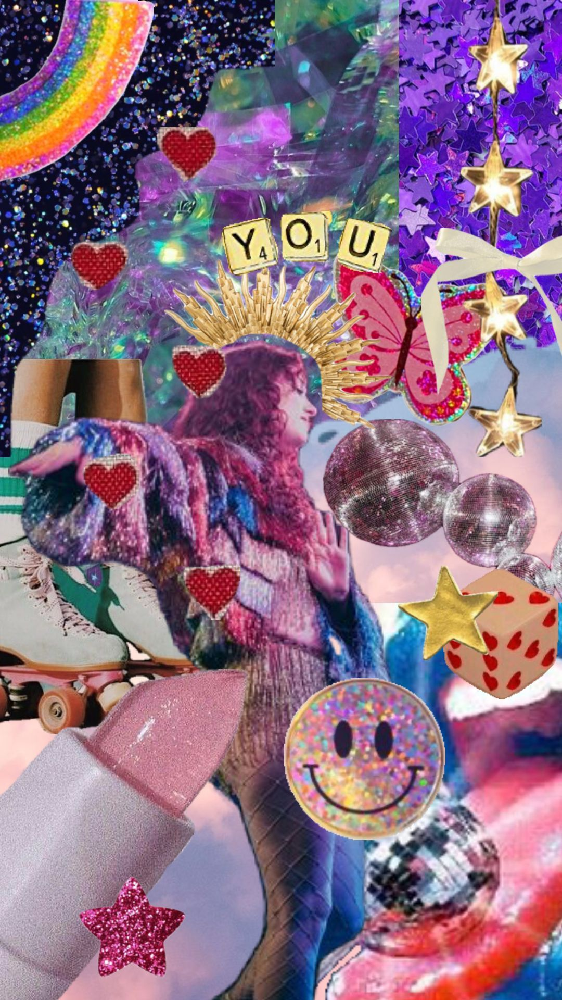

"it wasn't a kiss, it was a storm warning."
"i'm better now. isn't that fucked up."
"every Chappell song is a breakup letter i haven't written yet."
"i listened to 'Casual' again and now my heart is a puddle in fishnets."
"she looked at her like she invented the color blush."
"i play 'Red Wine Supernova' and suddenly every girl i've ever loved shows up in my brain in a glitter dress."